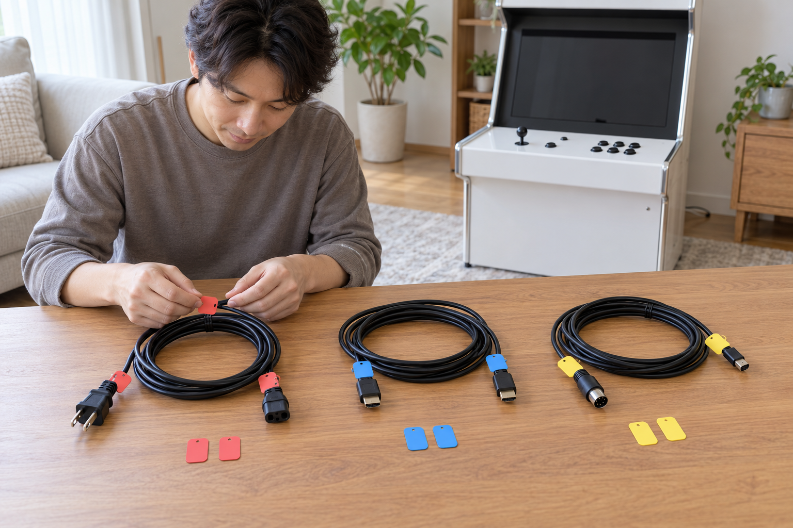
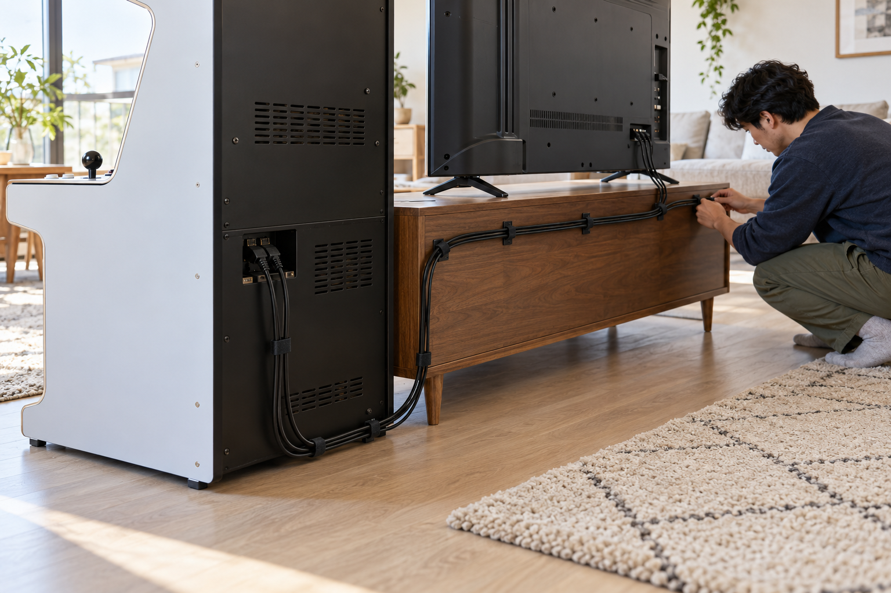

오락기 케이블은 먼저 전원선·화면선·조작부 연결선으로 구분하고, 양쪽 단자가 어디에 연결되는지 같은 표시를 남긴 뒤 통풍구와 사람이 지나는 길을 피해 정리해야 합니다. 단자 가까이는 약간의 여유를 두고 케이블을 세게 꺾거나 팽팽하게 당기지 마세요. 정리가 끝나면 연결 상태를 사진으로 남겨 이동이나 문의 때 같은 상태를 다시 확인할 수 있게 하세요.

케이블을 용도별로 먼저 구분하세요
전원을 끈 상태에서 오락기에 연결된 선을 하나씩 따라가며 전원선, 화면 연결선, 조작부 연결선으로 나누세요. 모양이 비슷한 케이블이라도 용도나 규격이 다를 수 있으므로 단자 모양만 보고 바꾸지 말고 주문 내역과 제품 안내를 확인해야 합니다. 용도를 모르는 선은 임의로 꽂지 말고 양쪽 단자와 제품명을 사진으로 남겨 판매자에게 문의하세요.
케이블 정리는 연결된 기기와 용도를 먼저 확인한 뒤 종류별로 나누는 단계에서 시작합니다.
노리박스 공개 제품 목록에는 ‘오락기용 220V 전원케이블’이 별도 상품으로 안내되고, TV 연결형 상품과 무선 분리형 조이스틱 세트도 함께 올라와 있습니다. 제품 형태에 따라 필요한 케이블과 연결 방식이 달라질 수 있으므로 다른 제품의 배선을 그대로 따라 하기보다 정확한 상품명과 구성품을 확인해야 합니다.
단자 양쪽에 같은 표시를 남기세요
케이블을 분리할 일이 있다면 먼저 현재 연결 상태를 전체 사진과 가까운 사진으로 남기세요. 케이블 양쪽 끝에 같은 색의 분리 가능한 표식을 붙이면 어느 기기와 단자에 연결했는지 찾기 쉽습니다. 표식은 단자 금속 부분이나 제품 표시를 덮지 않게 하고, 접착 흔적이 남거나 열에 약한 재료는 제품 안내를 확인한 뒤 사용하세요.
케이블 양쪽 끝의 동일한 표식과 연결 전 사진은 재연결할 위치를 찾는 기준이 됩니다.
- 전원선·화면선·조작부 연결선의 구분
- 케이블 양쪽 끝과 연결된 단자의 사진
- 단자와 제품 표시를 가리지 않는 분리형 표식
- 주문한 제품명과 선택 옵션 기록
전원 케이블을 확인하는 순서는 가정용 오락기 전원 연결 확인 방법에서 볼 수 있습니다.

통풍구와 이동 통로를 피해서 배치하세요
케이블이 본체 뒤 통풍구를 가리거나 바닥의 사람이 지나는 길을 가로지르지 않도록 가구 뒤나 가장자리로 경로를 잡으세요. 커튼이나 문을 움직였을 때 선을 누르지 않는지, 청소하거나 의자를 옮길 때 발에 걸리지 않는지도 확인하세요. 케이블 타이와 클립은 너무 세게 조이지 말고 단자 가까이에 여유를 남겨 연결부가 당겨지지 않게 하세요.
케이블 경로는 통풍구·문·커튼·이동 통로를 피하고 단자에 힘이 걸리지 않도록 정해야 합니다.
통풍 공간을 함께 점검하려면 오락기 주변 통풍 공간 확인 방법을 참고하세요.
연결 뒤 사진과 여유 길이를 확인하세요
정리가 끝나면 본체와 TV 뒤의 전체 경로, 각 단자, 전원 연결 상태를 사진으로 남기세요. 오락기를 조작하거나 가구를 움직였을 때 선이 팽팽해지지 않는지 확인하고, 남는 길이는 통풍구와 어댑터를 덮지 않는 위치에 느슨하게 정리하세요. 이후 화면 끊김이나 전원 이상이 생기면 선을 반복해서 바꾸기보다 제품명과 연결 사진, 이상이 나타난 시점을 판매자에게 전달하세요.
정리 완료 사진과 단자 주변의 여유 길이는 케이블 상태를 나중에 비교하는 기록이 됩니다.
노리박스 오락실게임기와 관련 케이블·조작부 상품은 제품자세히보기에서 확인할 수 있습니다. 어떤 선인지 또는 연결 위치가 불분명하면 연락하기에서 정확한 제품명과 양쪽 단자 사진을 함께 알려 주세요.